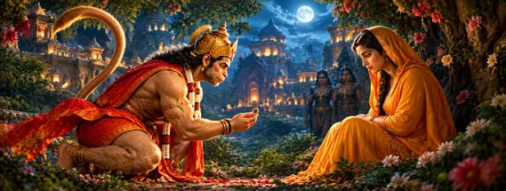

श्री हनुमान जी की दिव्य कथाएँDivine Stories of Hanuman Jiশ্রী হনুমান জির দিব্য কাহিনিश्री हनुमान जी की दिव्य कथाएँ
Divine Stories of Hanuman Ji
শ্রী হনুমান জির দিব্য কাহিনি
बाल लीला से श्री राम की सेवा और संजीवनी पर्वत तक—हनुमान जी की प्रमुख कथाओं की विस्तृत यात्रा।
Journey through Hanuman’s major devotional narratives, from childhood through Rama’s service, Lanka and Sanjeevani.
বাললীলা থেকে শ্রী রামের সেবা, লঙ্কা ও সঞ্জীবনী পর্যন্ত হনুমান জির প্রধান কাহিনির বিস্তৃত যাত্রা।
कथा परंपरा का महत्व
Why These Stories Matter
এই কাহিনিগুলির তাৎপর্য
हनुमान जी की कथाएँ केवल वीरता की घटनाएँ नहीं हैं। इनमें भक्ति, विवेक, सेवा, साहस, धैर्य और धर्म के प्रति निष्ठा बार-बार उभरती है।
Hanuman’s stories are not merely tales of heroic action. They bring forward devotion, discernment, service, courage, patience and dedication to dharma.
হনুমান জির কাহিনি শুধু বীরত্বের ঘটনা নয়; এতে ভক্তি, বিবেচনা, সেবা, সাহস, ধৈর্য ও ধর্মনিষ্ঠা প্রকাশ পায়।
दिव्य कथाओं की यात्रा
Journey Through the Divine Stories
দিব্য কাহিনির যাত্রা
बाल हनुमान और सूर्य
Child Hanuman and the Sun
বাল হনুমান ও সূর্য
बाल हनुमान की सूर्य की ओर उड़ने की प्रसिद्ध लीला।
The famous childhood leap toward the Sun.
সূর্যের দিকে বাল হনুমানের প্রসিদ্ধ লম্ফন।
श्री राम से प्रथम मिलन
First Meeting with Rama
শ্রী রামের সঙ্গে প্রথম মিলন
राम और लक्ष्मण से हनुमान जी का मिलन।
Hanuman meets Rama and Lakshmana.
রাম ও লক্ষ্মণের সঙ্গে হনুমানের মিলন।
सुग्रीव की सेवा
Serving Sugriva
সুগ্রীবের সেবা
सुग्रीव और राम के बीच विश्वास का सेतु।
A bridge of trust between Sugriva and Rama.
সুগ্রীব ও রামের মধ্যে বিশ্বাসের সেতু।
समुद्र लांघना
Crossing the Ocean
সমুদ্র লঙ্ঘন
लंका की खोज में महान छलांग।
The great leap in search of Lanka.
লঙ্কার সন্ধানে মহালম্ফন।
सुरसा की परीक्षा
The Test of Surasa
সুরসার পরীক্ষা
बल के साथ बुद्धि और उपाय की महत्ता।
Wisdom and adaptability alongside strength.
শক্তির সঙ্গে বুদ্ধি ও কৌশলের গুরুত্ব।

अशोक वाटिका
Ashoka Vatika
অশোকবাটিকা
माता सीता के दर्शन और श्री राम का संदेश।
Meeting Sita and carrying Rama’s message.
সীতার দর্শন ও রামের বার্তা।
लंका दहन
Burning of Lanka
লঙ্কা দহন
रामायण परंपरा की प्रसिद्ध वीर लीला।
A famous heroic episode of the Ramayana tradition.
রামায়ণ পরম্পরার প্রসিদ্ধ বীরলীলা।
संजीवनी पर्वत
Sanjeevani Mountain
সঞ্জীবনী পর্বত
लक्ष्मण जी के लिए औषधि लाने की सेवा।
The mission to bring medicine for Lakshmana.
লক্ষ্মণের জন্য ঔষধ আনার সেবা।
हनुमान जी के नौ पावन मार्ग
Nine Sacred Paths of Hanuman Bhakti
হনুমান জির নয়টি পবিত্র পথ
जय श्री राम • जय हनुमान
Jai Shri Ram • Jai Hanuman
জয় শ্রী রাম • জয় হনুমান
श्री हनुमान जी हमें भक्ति में स्थिरता, सेवा में विनम्रता, कर्म में साहस और धर्म के मार्ग पर चलने की शक्ति प्रदान करें।
May Lord Hanuman guide us toward steadfast devotion, humble service, courageous action and a life rooted in dharma.
শ্রী হনুমান জি আমাদের ভক্তিতে স্থিরতা, সেবায় বিনয়, কর্মে সাহস এবং ধর্মের পথে চলার শক্তি প্রদান করুন।